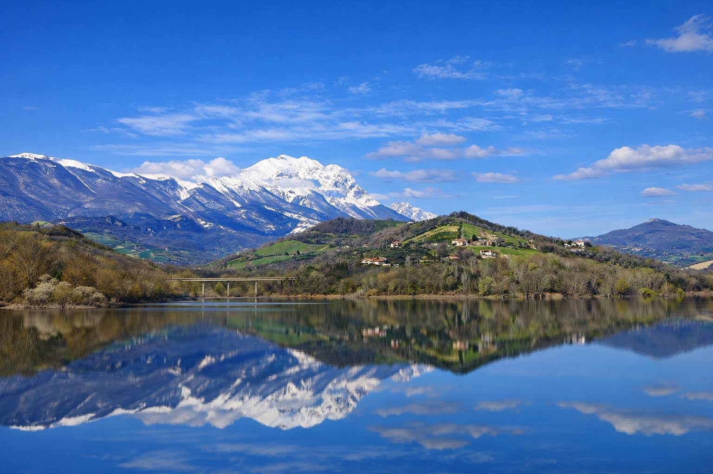

Sabato 25 Aprile 2026 · Festa della Liberazione
Cicloescursione Esperienziale
Anello Colline Vestine
Riserva Naturale Lago di Penne — Farindola
Gruppo Ciclo CAI Pescara
Escursione con soste esperienziali, panorami sul Gran Sasso e sezione fotografica dedicata.
Info evento
L’escursione unisce pedalata, visita naturalistica, attraversamenti e momento conviviale. Un percorso ad anello tra le colline vestine con vista sul Gran Sasso e sosta al Lago di Penne.
Attività esperienziali
Il Territorio: Cuore dell’Area Vestina
L’area pedemontana che abbraccia Penne, Farindola e Montebello di Bertona, fino ai piedi di Rigopiano, rappresenta uno dei paesaggi più autentici d’Abruzzo. Pedalare in questi luoghi significa attraversare la storia geologica e culturale della regione, in un territorio dove l’acqua e la roccia hanno disegnato percorsi millenari.
🌊 Il Ruolo del Fiume Tavo
Elemento centrale dell’itinerario è il Fiume Tavo, vera linfa vitale di questa terra. Risaliremo il suo corso partendo dal bacino artificiale di Penne, dove le acque si calmano creando un ecosistema unico. Il fiume funge da guida naturale nel paesaggio: dalle sponde ricche di vegetazione igrofila della Riserva si risale verso le sue sorgenti pedemontane, dove il carattere del corso d’acqua diventa più selvaggio e incassato tra le rocce del Vallone d’Angri, offrendo ai biker passaggi suggestivi e guadi che rinfrescano il cammino.
🏛️ Storia e Geografia
L’area è l’antica culla del popolo dei Vestini. Penne, nota come la Città di Mattone, sorge su colli che dominano la vallata, facendo da ponte tra il mare Adriatico e le imponenti vette del Gran Sasso. Geograficamente, il territorio è un affascinante labirinto di calanchi e colline argillose che cedono improvvisamente il passo a fitti boschi e pareti rocciose man mano che l’altitudine aumenta.
🦅 Natura e Paesaggio
Dalla Riserva Naturale Regionale Lago di Penne, oasi di biodiversità e punto di sosta fondamentale per l’avifauna, il percorso si inerpica verso il Parco Nazionale del Gran Sasso e Monti della Laga. Il paesaggio muta drasticamente in pochi chilometri: dai canneti del lago ai pascoli d’alta quota, tra querce secolari e il volo dell’aquila reale che sorveglia la piana di Rigopiano.
🧀 Enogastronomia: L’Anima dello Sdijuno
Questa è la terra del Pecorino di Farindola, un’eccellenza millenaria nota per essere l’unico formaggio al mondo preparato con caglio di maiale. Insieme all’olio extravergine d’oliva delle Colline Vestine DOP e ai vini intensi come il Montepulciano d’Abruzzo, questi sapori rappresentano l’anima dello sdijuno. Non un semplice spuntino, ma un rito sacro di condivisione, forza e appartenenza alla terra.
(Il mondo è fatto a scale, c’è chi scende e c’è chi sale)
— Setak, da Quilli che n’Arrivano
Programma dettagliato
| Orario | Km | Quota | Tappa / Note |
|---|---|---|---|
| 08:30 | — | ~380 m | Ritrovo Parcheggio Wolf Tour — verifica bici |
| 08:45 | — | ~380 m | Briefing percorso — distribuzione traccia GPX e GeoResQ |
| 09:00 | km 0 | ~380 m | Partenza |
| 09:45 | km 7 | ~270 m | Sosta visita Riserva Naturale |
| 12:00 | km 10 | ~760 m | Arrivo Farindola — sdijuno + pecorino |
| 14:00 | km 20 | ~380 m | Rientro a Penne |
Profilo altimetrico

GPX e strumenti per la sicurezza
La traccia GPX è un supporto alla navigazione. Scaricarla prima della partenza in modalità offline.
Foto e video di repertorio


Condividi la tua esperienza
Segui Moreno su Facebook e contribuisci al racconto dell’uscita caricando foto e video dell’esperienza vissuta.
Prenotazione
Per partecipare all’attività usa uno dei contatti rapidi qui sotto.
WhatsApp: 334 2317860
Email: morenomtb69@gmail.com